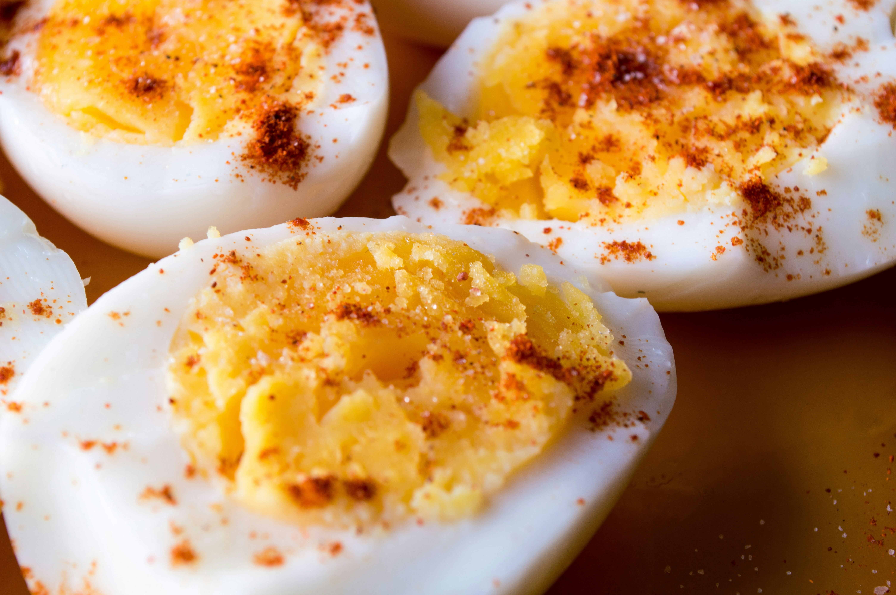

Deviled Eggs Recipe

Description
These deviled eggs are delicious and always popular at our holiday
parties. This recipe adds diced onion and
celery to the creamy mayonnaise filling for a little more
texture.
Ingredients
- Eggs
- Mayonnaise
- Sugar
- Vinegar
- Mustard
- Vegetables
- Seasoning
Steps
- Gather all ingredients. Peel hard-boiled eggs.
- Slice eggs in half lengthwise and remove yolks; set whites aside.
- Mash yolks with a fork in a small bowl. Stir in mayonnaise, sugar, vinegar, mustard, onion, and celery; mix well and season with salt to taste.
- Stuff or pipe egg yolk mixture into egg whites.
- Sprinkle with paprika. Refrigerate eggs until serving.
Go Back